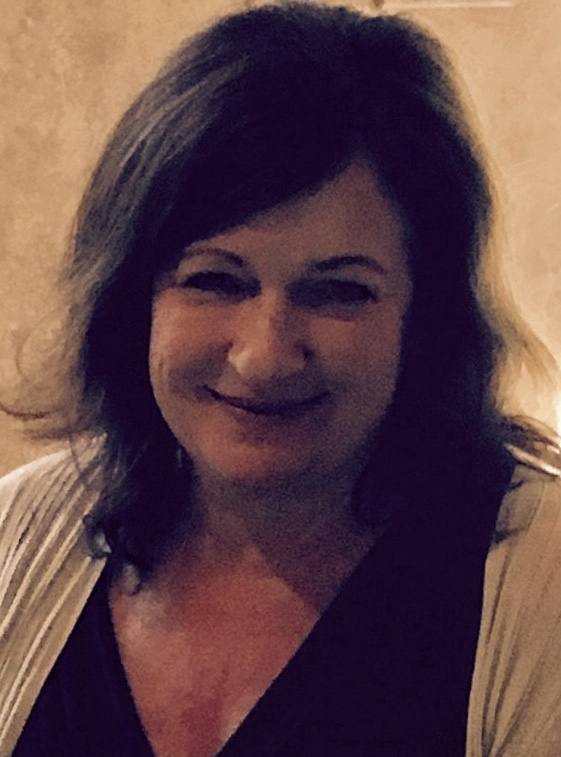
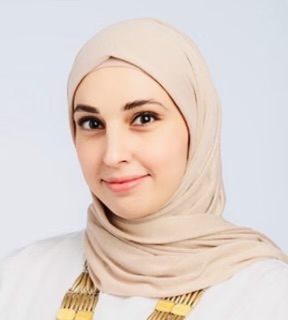
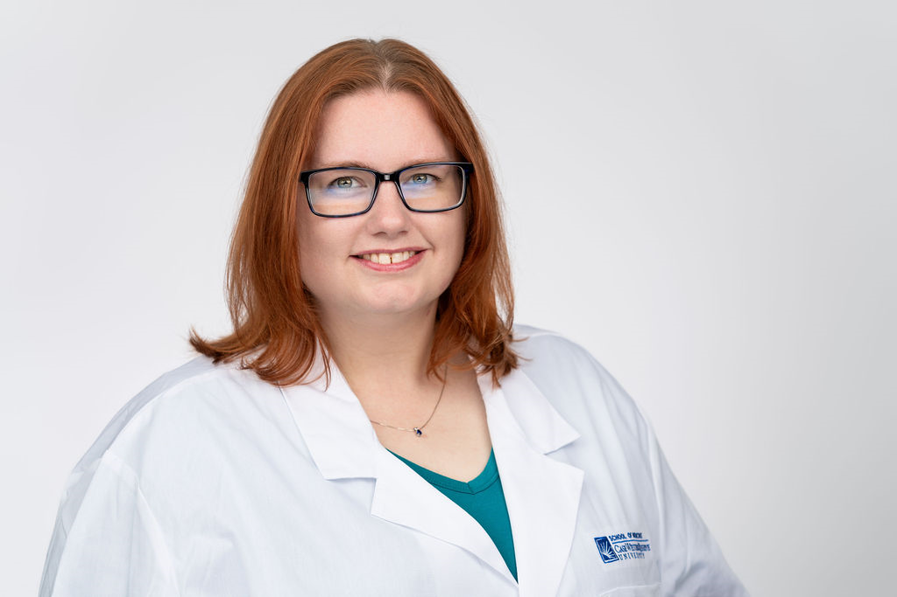
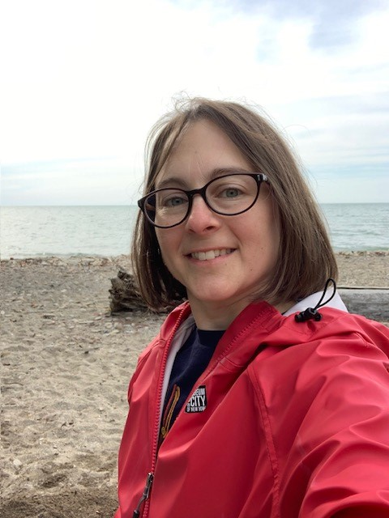
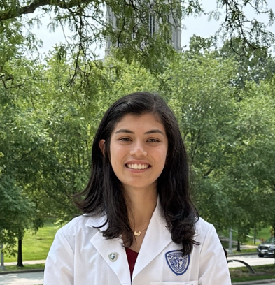

4 Teaching Assistants
Most of this year’s stellar group of teaching assistants have been in your shoes - they’ve taken the course in the past, and they enjoyed it enough to come back for more. They are volunteering their precious time and energy to help make the course happen, and we couldn’t be more delighted to welcome you to the course. All office hours and all teaching assistant work will be done remotely.
There is a lot to learn in this class. Don’t suffer in silence - talk to us! As mentioned earlier, you shouldn’t spend more than 15 minutes struggling with anything in this class without asking for help.
Visit the Getting Help with 432 section of this Syllabus for more details.
4.1 TA office hours
TA office hours are held via Zoom, will begin in mid-January and continue through the end of the semester, excluding Spring Break. The weekly schedule appears on our Contact Us page as well as our Course Calendar.
- Our Shared Google Drive (PQHS 432 Spring 2025 Dr Love and Students) will contain Zoom links for each of these sessions.
- No appointment is necessary. Please just drop in.
- Be sure to log into Google via CWRU to access the shared Drive.
Professor Love will also hold “office hours” after each class to the extent possible.
4.2 Getting To Know The TAs
The Spring 2025 Teaching Assistants for 432 are:
| TA Name | For more, visit | Current Roles and CWRU Experiences |
|---|---|---|
| Monika Strah | Section 4.2.1 | Co-Lead TA, PhD candidate, Clinical Translational Science |
| Alex Olejko | Section 4.2.2 | Co-Lead TA, PhD candidate, Psychological Sciences |
| Hala Nas | Section 4.2.3 | MS in Clinical Research, Physician, CCF |
| Kathryn Menta | Section 4.2.4 | PhD Candidate, Epidemiology & Biostatistics |
| Marie Masotya | Section 4.2.5 | PhD candidate, Clinical Translational Science |
| Miza Salim Hammoud | Section 4.2.6 | MS in Clinical Research, Fellow, CCF |
| Ria Tilve | Section 4.2.7 | MPH at CWRU, Medical Student |
| Sarah Albalawi | Section 4.2.8 | MPH Candidate, General Dentist |
4.2.1 Monika Strah

Monika Strah is a Ph.D. student in Clinical Translational Science at CWRU and a graduate of the Biostatistics M.S. program. She is looking forward to returning as a TA for PQHS 431/432 and also enjoyed TAing for PQHS 453. Monika’s research has included mathematical approaches to questions in population genetics and human evolution, examining dietary factors associated with lung cancer risk and analysis of multiple sclerosis related fatigue management strategies. Monika enjoys reading, hiking and is a member of the National Ski Patrol.
4.2.2 Alex Olejko
Alex is a PhD candidate in the Developmental, Cognitive, and Affective Sciences program in the Department of Psychological Sciences. He completed my undergraduate education at Ohio State, and earned my Master’s degree from CWRU in 2022. His research mainly resides in the field of behavior genetics, where he focuses on polygenic influences on behavioral outcomes. These outcomes mostly encompass educational and health phenotypes in the early to mid-twenties. Alex grew up outside of Cleveland and am a fervent Cleveland sports fan. He loves going to Guardians games and have already been to 20 this year (and counting). Some of his other favorite past-times include building Lego, mixology, exercise, and (mainly) single-player video games.
4.2.3 Hala Nas

Hala Nas is a pulmonary & critical care physician at the Cleveland Clinic. Her areas of interest include lung cancer and pleural diseases. She completed her MS in Clinical Research in May 2024. Her research interests include methodology and guideline synthesis in pleural diseases, as well as large data analysis in lung cancer. In her free time, she enjoys traveling, hiking, watching thriller movies and reading crime fiction.
4.2.4 Kathryn Menta

Kathryn Menta is a second year PhD student in Epidemiology and Biostatistics within the Department of Population & Quantitative Health Sciences. She worked as a crime scene investigator and forensic DNA technician for about seven years before returning to school to complete a new BS in mathematics and statistics at the University of Missouri, Kansas City. She then completed both a Master’s in mathematics and a Master’s in statistics at the same institution before coming to CWRU to start her PhD. Her current research is in statistical methodology development and analysis in phase III clinical trials focusing on multiple sclerosis drug treatments. Outside of school, Kathryn enjoys spending time with her husband and two cats binge watching numerous TV shows. She also is hoping to get back into singing (she is a classically trained opera singer) in the near future!
4.2.5 Marie Masotya

Marie Masotya, MPH, is a PhD student in the Clinical Translational Science program. She is Senior Research Coordinator at University Hospitals (UH) Rainbow Center for Child Health and Policy where she manages research, quality and community-based projects. She represents UH Rainbow on several multi-sectoral community partnerships focused on child health and health equity. These include Better Health Partnership, Lead Safe Cleveland Coalition, and the Community-Based Participatory Research Network. Marie took full advantage of TA support in Fall 2022 when she was a student in 431. She looks forward to returning that support to others this semester. When not doing research, you will find her enjoying live theater, music, and adventures with her spouse and 3 children.
4.2.6 Miza Salim Hammoud

Miza Salim Hammoud is a Pediatric Bone Marrow Transplant Fellow at Cleveland Clinic Children’s Hospital and completed her Master of Science in Clinical Research (CRSP) program at Case Western Reserve University (CWRU) in August 2024. Her goal is to become a pediatric research scientist dedicated to improving healthcare by addressing factors that contribute to and exacerbate socioeconomic disparities, particularly among vulnerable populations within the pediatric community. During the 2022-2023 academic year, Miza completed CRSP 431 and 432, applying the valuable research skills acquired from these courses to her ongoing projects. Outside of academia and research, Miza enjoys playing piano, painting, and exploring new countries and cultures, embracing the richness of global adventures.
4.2.7 Ria Tilve

Ria Tilve is a second year medical student at CWRU. After completing her bachelor’s in Biochemistry, she obtained her MPH in Population Health Research at CWRU. Her current research focuses on musculoskeletal health and biomedical imaging. Ria took 431 and 432 during the 2021-2022 school year, and she is applying those skills in her research projects. Outside of studying, Ria enjoys spending time with her family, running, watching sports, and exploring new places.
4.2.8 Sarah Albalawi

Sarah Albalawi is in her third year in the MPH program in the department of Population and Quanitative Health Sciences. She completed her undergraduate studies in Dental Medicine at King Saud University in Saudi Arabia. Her research interests are oral health outcomes among medically compromised patients and the mobilization of rural dental care services. She loves baking sweets, appreciating art at galleries, and photographing nature.